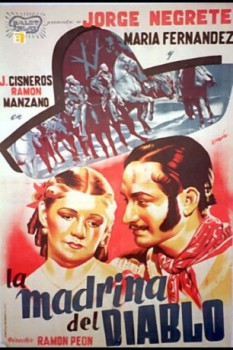

La madrina del diablo (1937)


País:España, 81 minutos.
Idiomas:Español
Géneros
Director/es:Ramón Peón
Guionistas:
Códec de vídeo:Unknown
Número: 3354
TomatoMeter:

--

--
Clasificación IMDb:


6.2/10 (4 votos)
Certificación:
Argumento:
Set in the 1820s; an unhappy love affair and some family problems drive a young gentleman to banditry.
Reparto
Jorge Negrete, María Fernanda Ibáñez, Miguel Manzano, Julián Cisneros Tamayo, Alfonso Bedoya
Medio: Archivo de video,
Localización: D:\PELICULAS\ACTORES\Jorge Negrete\[ Jorge Negrete ] LA MADRINA DEL DIABLO (1937)\LA MADRINA DEL DIABLO (1937) con Jorge Negrete.mp4
Prestado: No
Rel. aspecto: Unknown